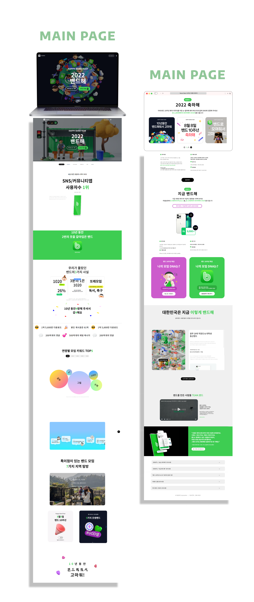
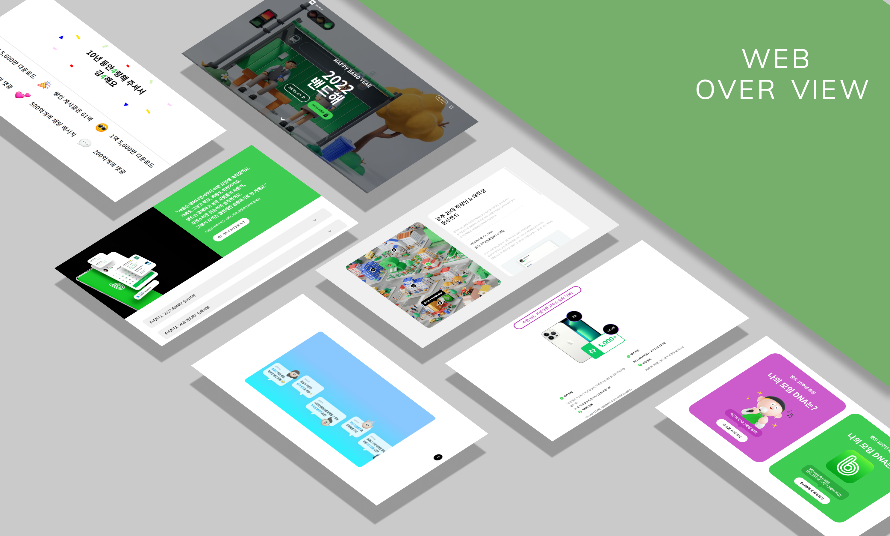

-
Naver Band
-
사용한 SKILLS
HTML , SASS , JQUERY
-
제작기간
5일 소요
-
제작 기여도
100% ( 개인프로젝트 )
-
학습 내용
HTML과 CSS의 특성을 확실히 이해하기 위해 다양한 기능을 구현할 수 있는 Naver Band 10주년 이벤트 페이지 전체를 클론코딩 함으로써 HTML과 CSS의 전반적인 기능에 대해 확실한 배움을
얻었으며, 1920px 부터 500px까지 반응형 미디어쿼리로 제작해 보며 다양한 스킬을 함유하게 되었습니다.
-

